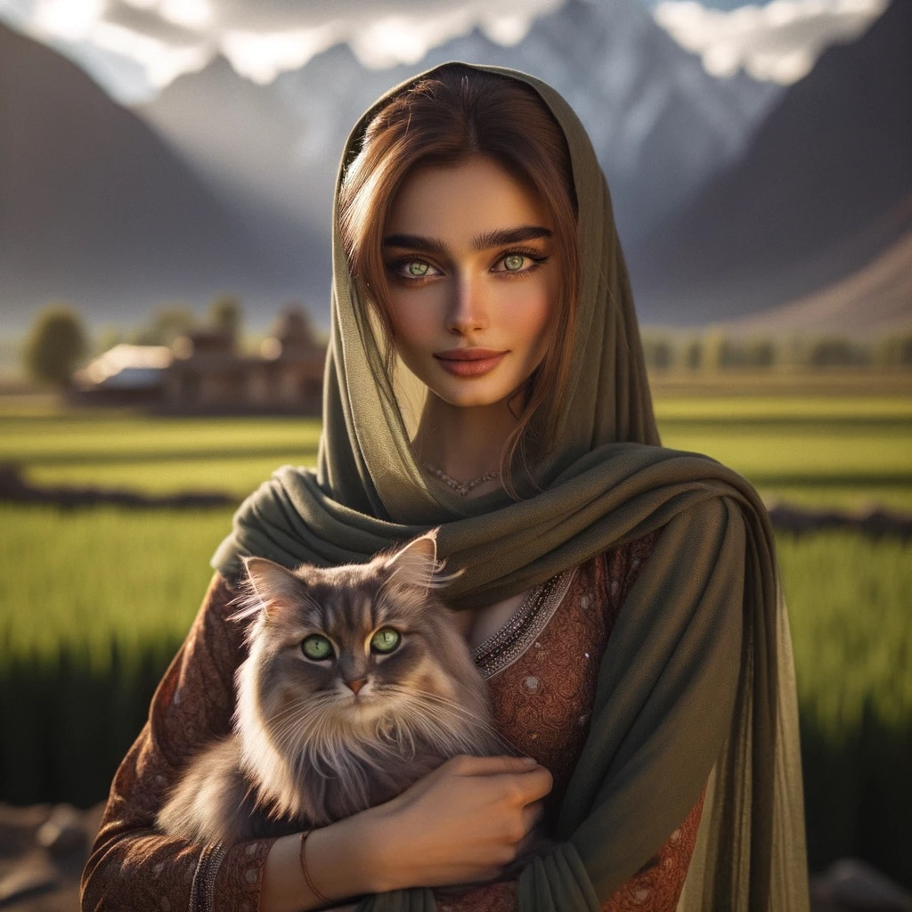
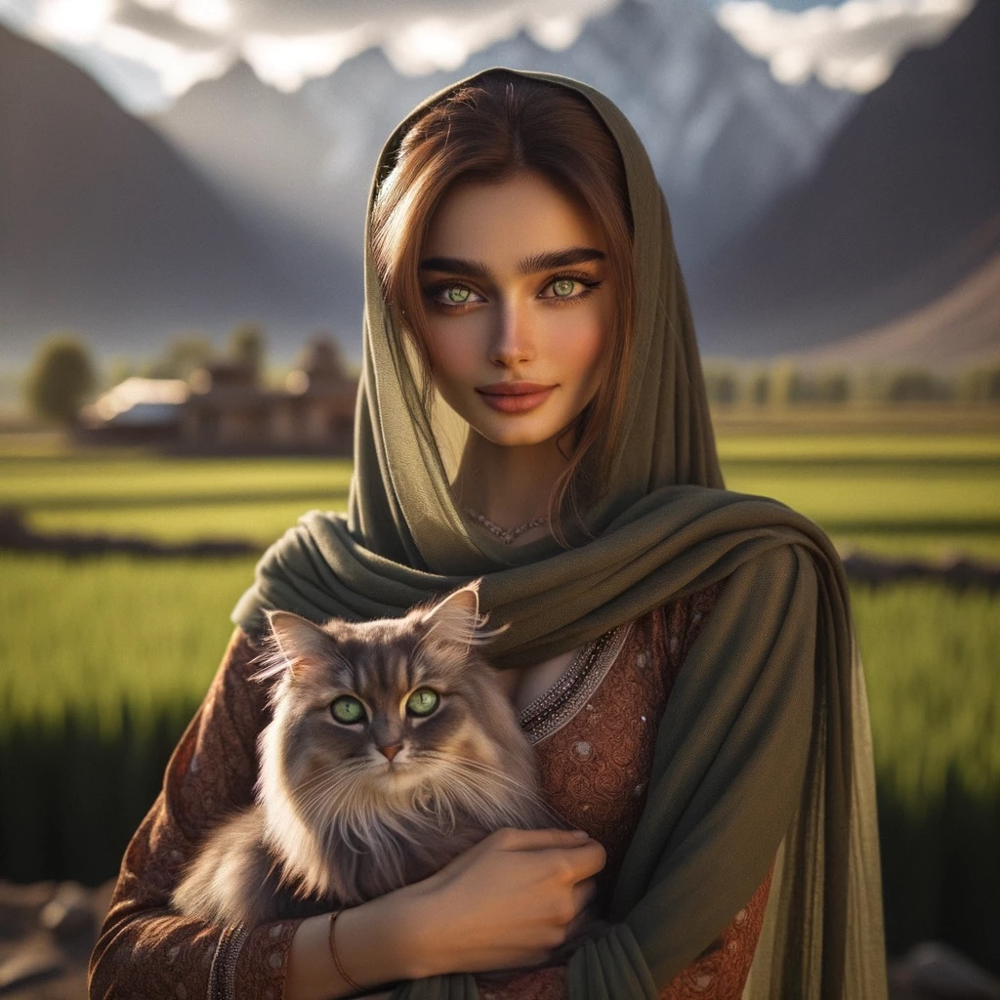

A.I Generated Images
AI-generated photos offer a unique blend of creativity and technology that can capture the imagination. What's fascinating is their boundless potential; they can visualize scenes that don't exist, bring to life fantastical concepts, or give form to abstract ideas. The process is also incredibly efficient, creating images in moments that might take a human artist hours. These photos can reflect a personal style or explore aesthetic realms beyond the usual constraints of traditional photography. For enthusiasts, it's like having a personal art generator at your fingertips, providing a never-ending stream of visual wonder that is both inspiring and delightful to explore.

 
